1×OSCに3つのMorphing。他社シンセでは見かけないColorエンジン、OTTやSOOTHEも標準搭載！カスタムWavetableの追加や各種Mod（3×LFO、2×MSEG、3×ENV）を駆使し様々なパラメーターにアサインが可能。全10モジュールのスクリーンショットで全貌を公開。
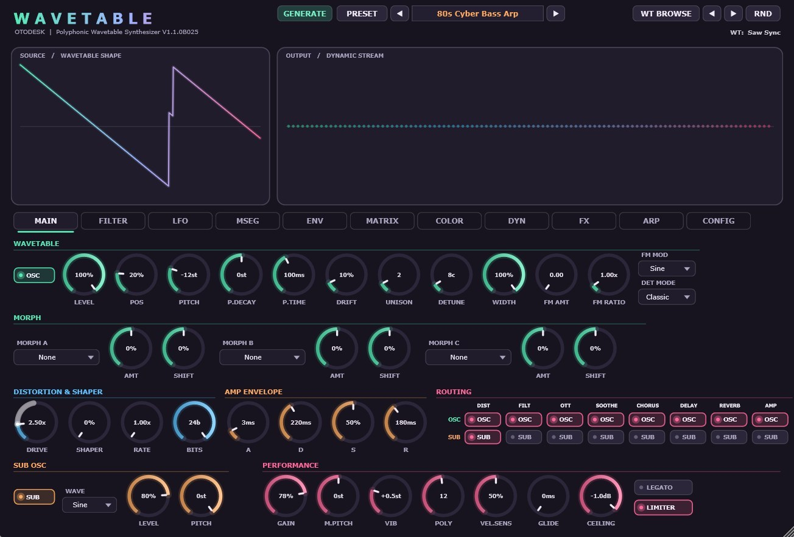
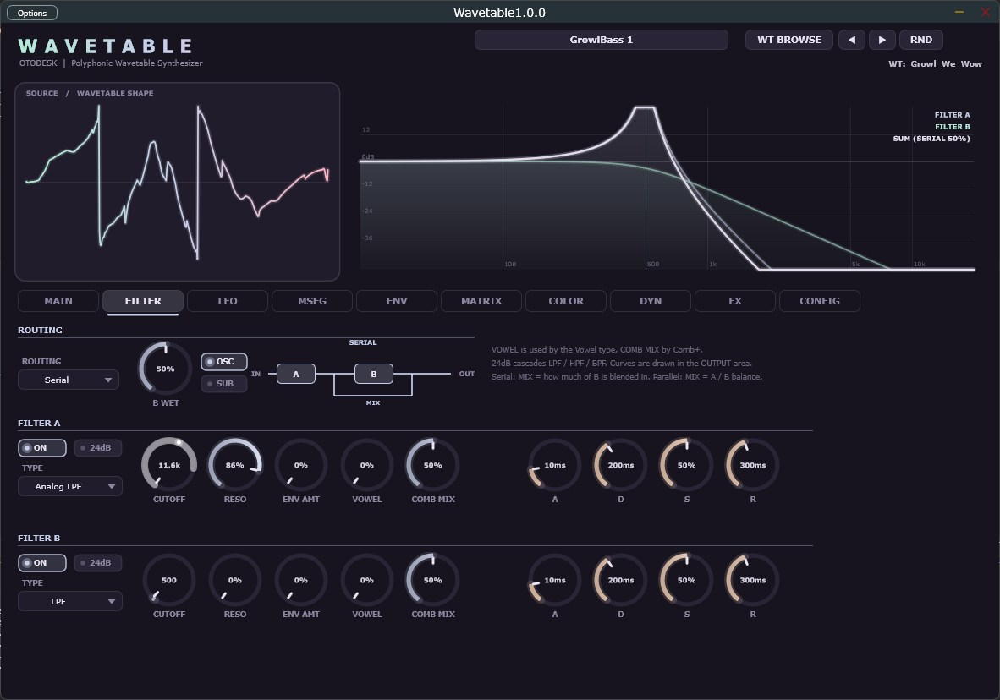
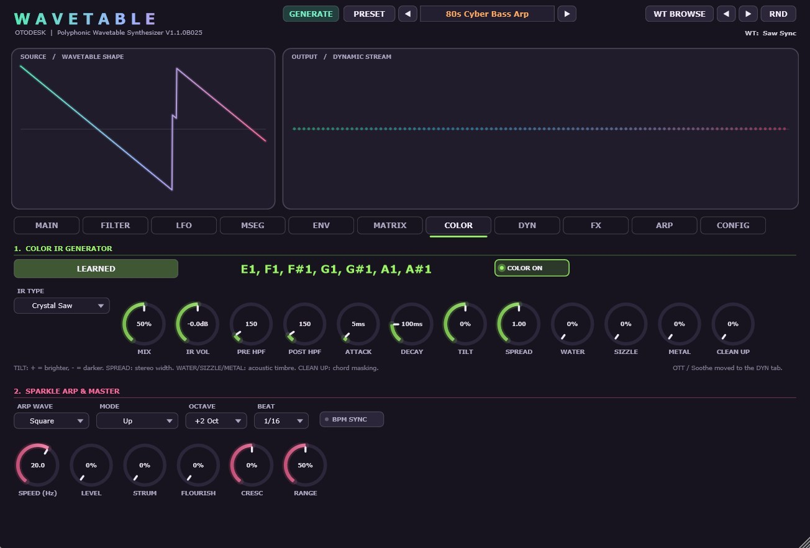
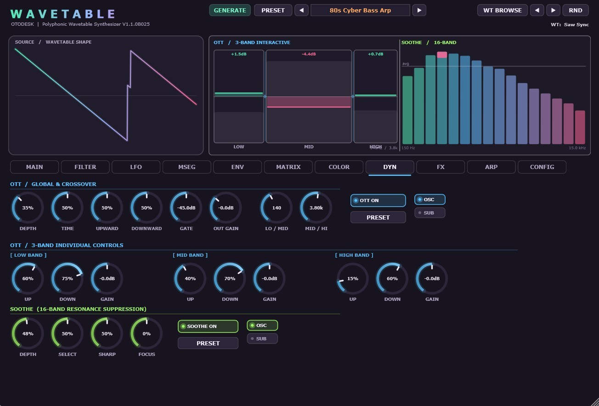
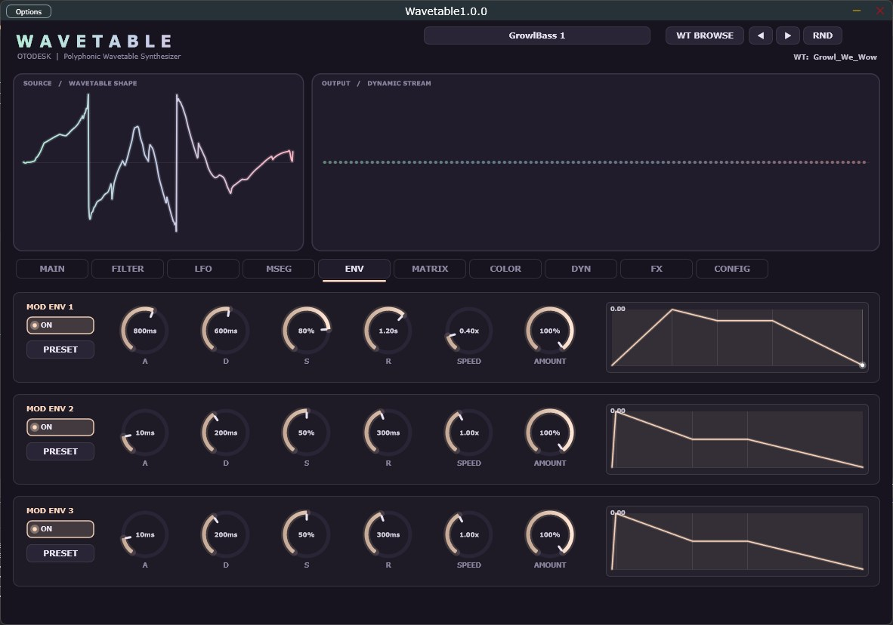
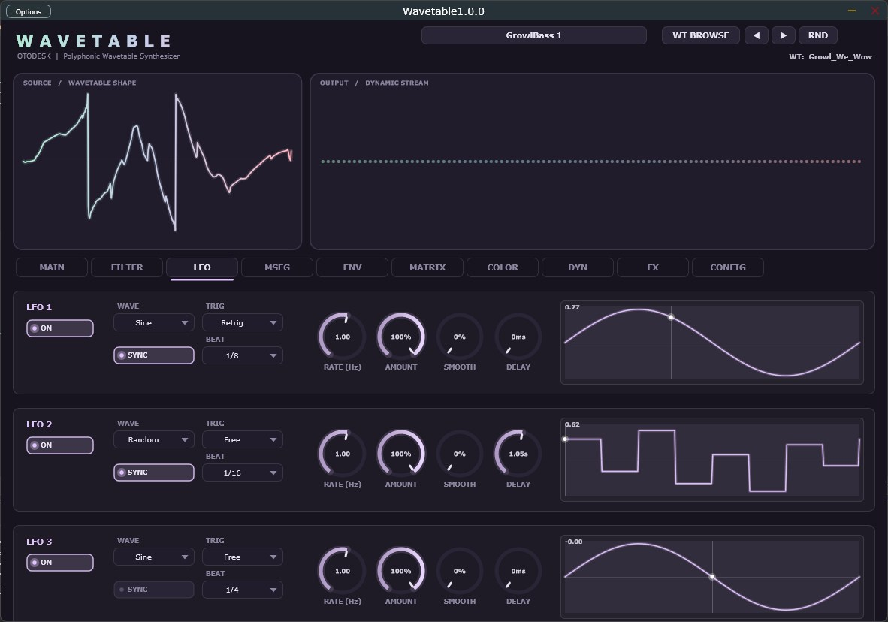
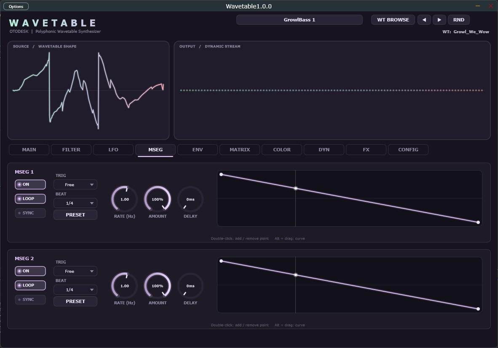
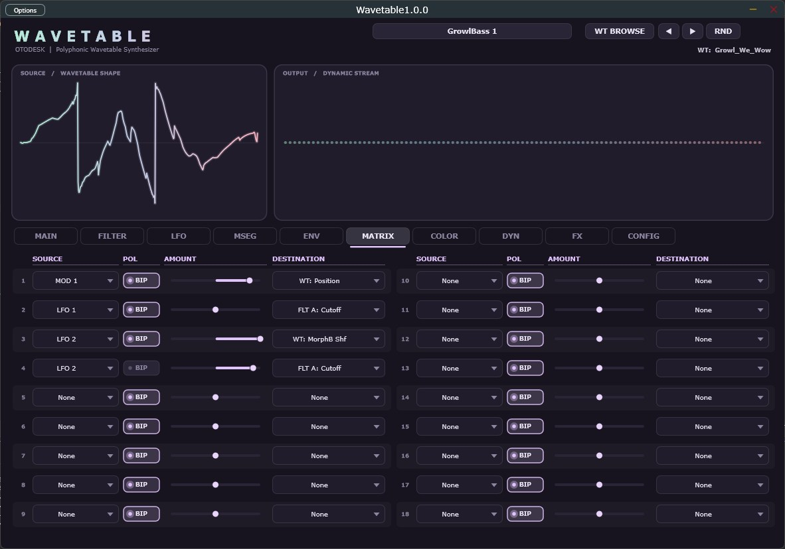
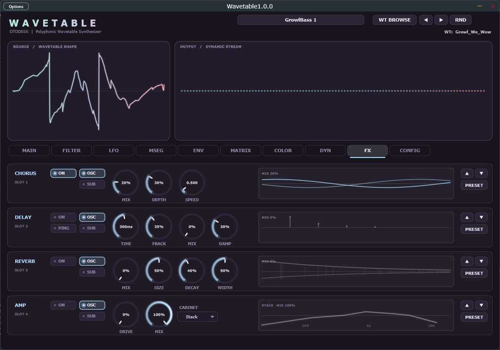
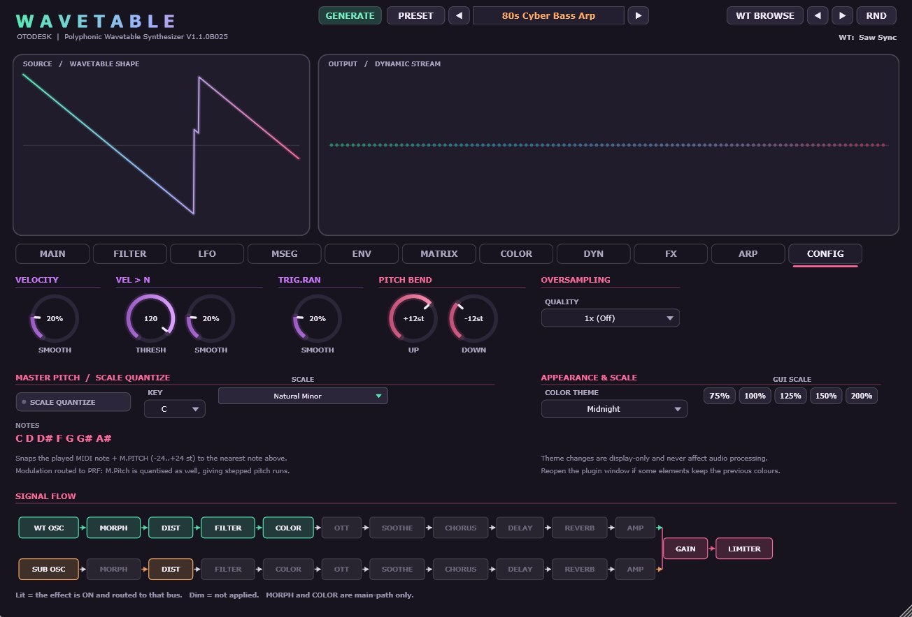
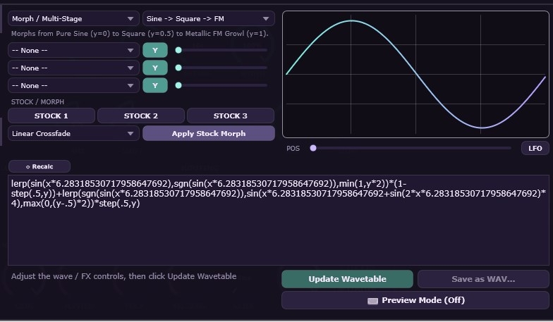
? :）、比較演算子（<, >, <=, >=, ==, !=）、論理演算子（&&, ||）を含む高度な条件付き数式評価をサポート。| カテゴリ | パラメーター | 範囲 | 概要 |
|---|---|---|---|
| Oscillator & Morph | 1 WT OSC + Sub | 3 Morph Slots × 19 Modes | 13 Factory Tables, 12-Voice Unison, 5 Detune Modes |
| Wave Generation | Formula Generator | Math Expression / 3 MOD Slots (x/X/y/Y) | 三項演算子/論理式対応のリアルタイム数式波形合成, 4ステートMODリンク, Stock Morph プリセット, WAV保存/エクスポート |
| Filter System | Dual Filter (A/B) | 9 Types (LP/HP/BP/Comb/Ladder/Vowel/Phaser) | Serial / Parallel Routing, 12/24 dB Slopes |
| Dynamics Engine | OTT + Soothe | 3-Band Comp & 12-Band Resonance Suppressor | OSC/SUB 独立バスルーティング |
| Modulators | LFO × 3 / MSEG × 2 / ENV × 3 | 18 Matrix Slots (Uni/Bi) | 32 Nodes MSEG, Continuous LFO Smooth & Delay |
| Color & FX | Color IR Engine + 4 FX | Chorus / Delay / Reverb / Amp | IR Learn 機能, 70 Scale Quantizer, 10 UI Themes |